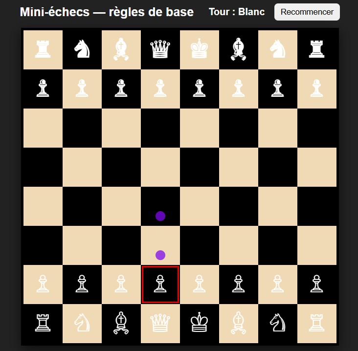

Mini-projet : Jeu d'échecs avec IA simple
Dans le cadre de ma formation en BTS SIO, j’ai développé un mini-jeu d’échecs en HTML, CSS et JavaScript. Ce projet individuel m’a permis de mettre en œuvre mes compétences en développement web tout en intégrant une intelligence artificielle simple.
Objectifs du projet
- Reproduire les règles de base du jeu d’échecs
- Créer une interface utilisateur interactive et responsive
- Mettre en place une IA qui joue automatiquement les noirs
- Afficher les coups possibles, captures, et gérer les tours
Technologies utilisées
- Langages : HTML5, CSS3, JavaScript
- Éditeur : Visual Studio Code
- Librairies externes : Aucune

Fonctionnement
Le joueur humain joue les pièces blanches, tandis que l’IA contrôle les pièces noires. À chaque tour :
- Le joueur sélectionne une pièce ; les déplacements valides sont surlignés.
- Les captures sont indiquées par des cercles rouges, les déplacements simples par des points bleus.
- L’IA choisit un coup parmi les options disponibles (priorité aux captures).
- Un bouton « Recommencer » permet de relancer une nouvelle partie.
Structure du code
Le projet est structuré en une seule page HTML contenant :
- Le plateau généré dynamiquement avec JavaScript
- Des fonctions comme
getMoves(),aiMove()ourenderBoard() - Des styles CSS personnalisés pour les cases, pièces, et effets visuels
Compétences mobilisées
- Manipulation du DOM avec JavaScript
- Programmation événementielle (clics, interactions)
- Algorithmie de base (détection de mouvements valides, IA simple)
- Gestion d’état (tour du joueur, grille dynamique, sélection)
Conclusion
Ce projet m’a permis d’allier logique algorithmique et design web, en appliquant des principes de programmation claire et modulaire. Il a constitué une première approche de l’intelligence artificielle dans un contexte ludique.